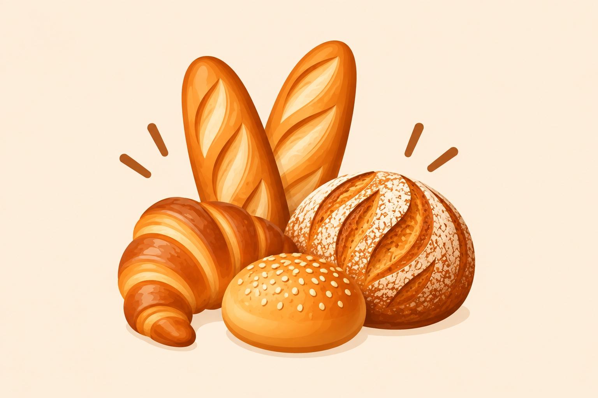

Made in small batches
Something fresh for every occasion
Choose an everyday favorite or contact us about a custom celebration order.

Breads
Simple ingredients, careful preparation, and a crisp golden crust.
- Artisan loaves: $6–$10
- Sourdough: $7–$12
- Dinner rolls: $5–$9
🥐
Pastries
Rotating croissants, muffins, danishes, and seasonal pastries.
$3–$7 each
🎂
Cakes
Custom cakes for birthdays, family gatherings, and work events.
$30–$85, based on size and design.
Remember your favorite
Save a Bakery Favorite
Choose an item below. North Star Bakery will remember your choice when you return.
Choose a favorite to save it for your next visit.
Bakery favorite
The Signature Loaf
A balanced crust, soft center, and small-batch care make this our community favorite.
Start a preorder